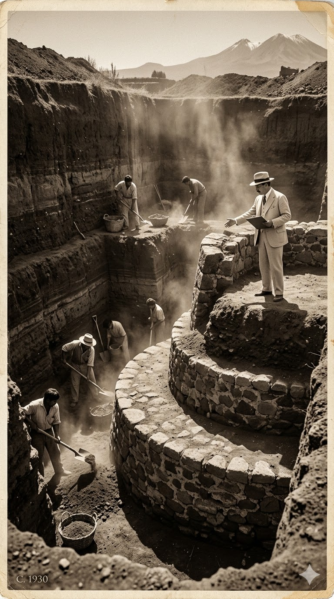

Audio-Guía: El Descubrimiento
Historia y Relevancia
En el corazón del Valle de Toluca, en el Estado de México, se encuentra Calixtlahuaca, un sitio ancestral que resguarda la grandeza de los pueblos prehispánicos, especialmente de la cultura Matlatzinca. La historia moderna de este lugar despertó de su letargo en la década de 1930.
Las Excavaciones
Fue bajo la dirección del incansable arqueólogo José García Payón cuando las excavaciones comenzaron a revelar la verdadera majestuosidad de este centro ceremonial que había quedado oculto bajo la tierra. Capa por capa, fueron descubriendo estructuras fascinantes.
El Templo y el Misterio
El hallazgo más imponente fue, sin duda, la Estructura 3: un espectacular templo circular dedicado a Ehécatl, el dios del viento. Pero Calixtlahuaca guardaba un secreto aún mayor. Entre los hallazgos de García Payón apareció una pieza desconcertante: una pequeña cabeza de terracota con rasgos inconfundiblemente romanos.
Hoy, Calixtlahuaca se erige imponente en la llanura. Sus piedras siguen susurrando las historias de los 'hombres de la red' y nos invitan a no dejar de explorar los misterios de nuestro pasado.
En suma, Calixtlahuaca se erige en la llanura no como ruinas, sino como el cimiento de nuestra identidad histórica. Este proyecto, mediante el Aprendizaje Basado en Problemas, busca que el estudiante no solo memorice datos, sino que se apropie de su patrimonio Matlatzinca para ejercer una Interculturalidad Crítica y revalorar su legado.
Fundamentación del Proyecto (NEM)
"El proyecto Calixtlahuaca 360 surge como una respuesta directa a los planteamientos del Plan de Estudio 2022, situando a la comunidad al centro de los procesos educativos. Al enmarcarse en el campo formativo de Ética, Naturaleza y Sociedades, la plataforma actúa como una herramienta de contextualización (Plano 2) y codiseño (Plano 3), permitiendo al docente adaptar el currículo nacional a la realidad biocultural del Valle de Toluca. Mediante la metodología de Aprendizaje Basado en Problemas (ABP), se atiende la desconexión identitaria de los estudiantes con su patrimonio local. El museo virtual trasciende la memorización pasiva, convirtiéndose en un espacio donde los alumnos realizan una lectura crítica de su realidad, reconociendo el legado Matlatzinca no como ruinas aisladas, sino como el cimiento de su propia identidad histórica."
Justificación del Proyecto Virtual
La transición hacia un modelo multimodal representa el próximo paso evolutivo en el proceso de enseñanza-aprendizaje de la Historia. Conformado por arquitectura web, curaduría histórica y diseño de experiencia de usuario, este modelo emplea múltiples canales (espacial, visual y auditivo) de forma simultánea. En Calixtlahuaca 360, la inmersión fotográfica, respaldada por audio-guías y glosarios, ofrece un andamiaje cognitivo que atiende a la diversidad de ritmos de aprendizaje. La intención es clara: proporcionar una alternativa pedagógica que democratice el acceso al sitio y consolide la alfabetización digital e histórica del alumno.
El proyecto Calixtlahuaca 360 surge como una respuesta directa a los planteamientos del Plan de Estudio 2022, situando a la comunidad al centro de los procesos educativos. Al enmarcarse en el campo formativo de Ética, Naturaleza y Sociedades, la plataforma actúa como una herramienta de contextualización y codiseño, permitiendo al docente adaptar el currículo nacional a la realidad biocultural del Valle de Toluca. Mediante la metodología de Aprendizaje Basado en Problemas (ABP), se atiende la desconexión identitaria del estudiante. El museo virtual trasciende la memorización pasiva, convirtiéndose en un espacio donde los alumnos realizan una lectura crítica de su realidad para reconocer el legado Matlatzinca.